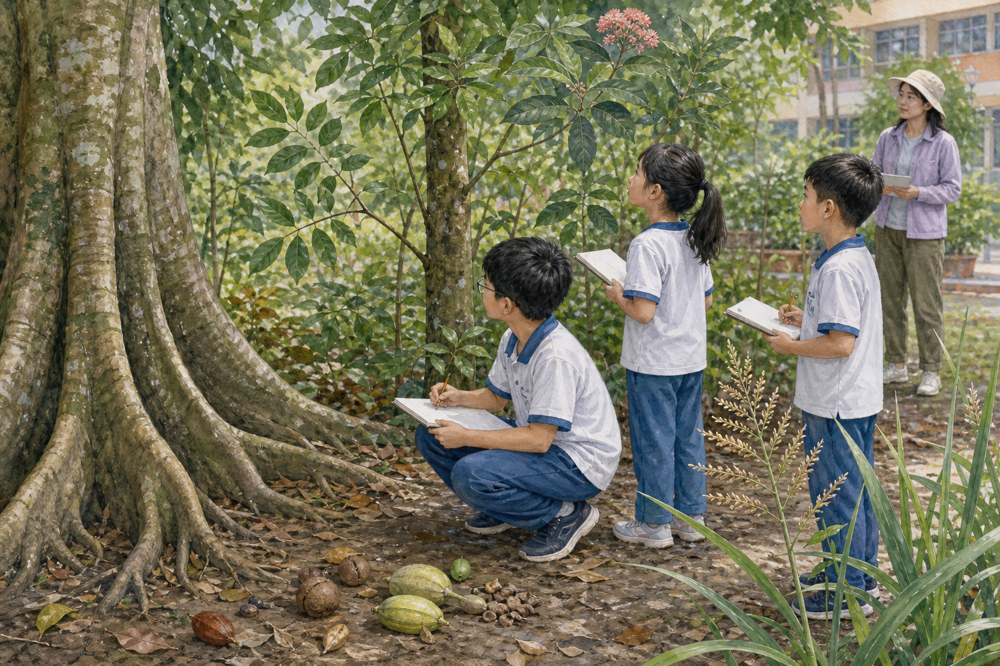

根線索
找一個在地面可見的根或板根，畫出它和土壤、樹幹的連接。

CAMPUS WALK · GAME Ⅱ
用五種構造線索畫一張「可重走」的校園植物路線。重點不是猜得快，而是讓別組能依你的紀錄回到同一株植物。
找一個在地面可見的根或板根，畫出它和土壤、樹幹的連接。
找木質莖、草質莖或具節的莖，記錄表面與分枝方式。
選一株能看清葉序的植物，再記葉形、葉緣或單複葉其中兩項。
遠看花序位置或落果形態；沒有花果就如實寫「本次未見」。
找一株禾草與一株「看似草但不是禾草」的低矮植物，寫出差異。
組別：＿＿＿＿ 路線起點：＿＿＿＿＿＿＿＿＿＿ 日期／天氣：＿＿＿＿＿＿＿＿
| 站點 | 位置怎麼走 | 整株／根莖 | 葉的三項線索 | 花果或「未見」 |
|---|---|---|---|---|
| 1 | ||||
| 2 | ||||
| 3 |